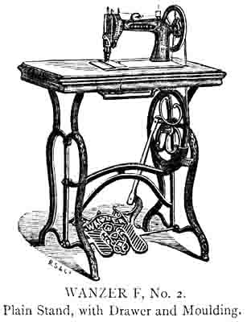

INSTRUCTIONS FOR USING
THE WANZER D, E AND F,
SEWING MACHINES.
__________
SETTING THE NEEDLE
Set the needle with its head or shank in the needle yoke A, with its eye ranging from left to right, with long groove to the left; secure it by screwing up the centre screw B, at the lower end of needle bar E. Set the needle so that in its descent it will pass through the centre of the needle hole and pass as close as possible to the left of the shuttle without touching it, and its eye about 3/16th of an inch below the point of shuttle, so that shuttle will enter the loop of thread formed at the right side of the needle on its rise. If the thread is improperly twisted it may throw the loop one side instead of square into the shuttle race. In that case the needle should be slightly turned in an opposite direction, to counteract this tendency to throw the loop away from its proper position. Sometimes the shuttle will miss the loop because the needle sets too far from the shuttle, and at other times the shuttle may strike the needle because the needle sets into the shuttle race. To adjust the needle nearer to or father from the shuttle, turn the two frout screws, C and D, on the end of needle bar E, in or out as the needle requires to be nearer to or father from the shuttle. Care should be taken to turn both screws the same, otherwise the needle will not be in a straight line with the needle bar.
Turn the hand wheel P so that the mark on front edge of needle bar E will be even with top of arm; then the eye of needle, if properly set, should be on a level with plate.
THREADING THE NEEDLE
Place the spool on spool-pin or wire G, on top of the arm of machine, so that it will turn freely. Pass the thread backwards and forwards through the five holes in thread guide H, passing it through the first hole of thread guide from the far side, so that the thread, in passing through the fifth hole, will be drawn to the front. Pass the thread over the top and round the tension wheel J, letting the thread lie in the V shaped groove formed by the interlocked teeth of the tension wheel, passing it once around the wheel. If the thread is fine, or should slip without turning the wheel, pass it twice around the wheel. Pass the thread thence through wire eyelet K, from right to left, down through the hole in the end of the take-up lever L, from right to left; thence up through the tube M, on top of needle bar E, and down through eye of needle, from left to right, letting the thread rest in slot in needle clamp, leaving three inches of thread.
THREADING THE SHUTTLE
In working, the bobbin T revolves inside the shuttle. The operator must be careful to place bobbin properly inside shuttle. On the inside of shuttle, at the front or forward end, is a centre, acted upon by a spring; into this one point of the bobbin should be placed, with the thread drawing off from the lower side, then press the other point of bobbin in at heel of shuttle, pushing it down gently until a slight snap is heard, or until it enters the small hole or bearing. The thread must be then passed up through the slot farthest from edge of the shuttle, and down through the upper slot, thence through the hole nearest back or heel end of the shuttle, then in through hole nearest point of shuttle and lastly out through short slot under the spring. Should a greater tension than this would give be required, thread through five instead of three holes, being careful always to pass the thread out of the short slot last, leaving an end of thread three inches long.
SPOOLING THE LOWER THREAD
Place the spooler attachment N on the top of outside connection. Turn the balance wheel of machine so that the small wheel of spooler will be even with the belt groove in balance wheel F. Pass the belt from groove in balance wheel F to groove on the pulley wheel. Place one end of the bobbin in spooler spindle N, the other end in the point in the centre of spring, and having attached the thread, work the machine the same as when sewing. Oil the spooler spindle and point of bobbin, working in point of spring, before using. Care should be taken in winding bobbin to lay the thread on as evenly and tightly as possible.
REGULATING THE TENSION
Care must be taken in regulating the tension of lower and upper threads. Produce tension enough on the upper thread to draw the lower loop or lock into the fabric by turning the nut O on tension wire. If the tension be too tight the thread will break or the fabric will be gathered; if not sufficiently tight the loop or lock will not be drawn up into the fabric, but will lie in a succession of loops on the under side of fabric.
To increase the tension turn the nut towards the right. To lessen the tension, turn the nut towards the left.
TO REGULATE THE STITCH
The machine feeds the fabric through itself, the operator only guides it. To make a long stitch, press down the lever P, at the right hand side underneath machine, To make a short stitch raise lever up.
TO SEW
Be seated before the machine. Withdraw the back slide which rests over shuttle, turn balance wheel until the points on shuttle carrier are visible, place the shuttle between the two points, with point of shuttle to the front. Close the slide. Place one or both feet upon the sandals; start the machine by turning the balance wheel F towards you with the hand - never turn it backwards. Raise the needle bar E by turning the wheel. Raise the presser foot by lifting the lever R attached to the presser bar in front of the machine, place the fabric beneath it. Let the presser foot drop upon the fabric to be sewed.
| GENERAL INSTRUCTIONS |
1. Before attempting to sew, learners
should make themselves perfectly familiar with the foot motion. In practising
raise the presser foot by lever R that the teeth of feed will
not scratch the same. Take out the shuttle, unthread the needle, place
both feet upon the sandals, start the machine by turning the wheel towards
you with the right hand, adapting the feet to the motion. Learners should
practice turning the machine, starting and stopping the same until a
perfect forward motion is obtained; a reverse or backward motion will
entangle or break the thread. |
2. The upper thread should pass through the eye
of the needle from left to right, the ends of the same being about three
inches in length. The shuttle is then to be placed in the shuttle carrier
by removing back or sliding place S, the point of the shuttle
towards the operator. The same length of thread to be left as from the
needle. Make the revolution of the wheel, so that the needle will descend
and the threads interlock. By then gently drawing on the upper thread
you will be enabled to bring the under one though the needle hole in
the throat place, so that both will be together between plate and presser
foot. |
3. When a seam is completed draw the upper thread
from spool with the left hand; detach the same close to the fabric;
let it extend through the eye of the needle (about three inches) a proper
length for starting; raise the presser foot, take out the work, and
detach the under thread, leaving the same through needle hole in cloth
plate. Attention to this suggestion will prevent springing and breaking
of needles, especially the finer sizes. |
4. The feed carries the fabric along, and the operator
as a general ruse should neither assist it with the right hand nor retard
it with the left, but allow it to pass at will, holding and guiding
it steadily. |
5. A little care in arranging the tension will
produce a perfect stitch on both sides. Heavy fabrics usually require
more tension than others. Should loops occur on the under side, first
ascertain whether you have threaded the machine properly, then gradually
increase the tension by turning the nut O towards the right until
the loops are drawn up and the stitch assumes the same appearance on
both sides. |
6. Missed stitches are occasioned either by the
needle being set too high or too low, or so as to descend too far to
the left of the needle hole. |
7. Should there be any difficulty in driving the
needle through thick fabrics (if the needle is not blunted), it will
be caused by the belt having stretched and slipped on the balance wheel.
This may be remedied by cutting a piece off the belt and making a new
hole where the ends are clasped together. |
8. With a machine it is not necessary to use as
coarse cottons or silks as for hand sewing, two threads being used instead
of one. As a general rule the size of thread for the material to be
sewed should first be determined, then care should be taken to make
the proper adaptation of needles. |
The following sized needles are suitable for the following sized threads, viz.:
| For | No. |
100
|
to |
100
|
cotton | or |
000
|
twist | ................................................ | No. |
00
|
needle
|
|
"
|
"
|
80
|
to |
90
|
"
|
00
|
"
|
................................................ |
0
|
"
|
||
|
"
|
"
|
60
|
to |
70
|
"
|
0 & A
|
"
|
................................................ |
1
|
"
|
||
|
"
|
"
|
40
|
to |
60
|
"
|
B
|
"
|
................................................ |
2
|
"
|
||
|
"
|
"
|
20
|
to |
36
|
"
|
C
|
"
|
................................................ |
3
|
"
|
||
|
"
|
"
|
10
|
to |
20
|
"
|
D & E
|
"
|
................................................ |
4
|
"
|
||
|
Coarse cotton, linen or twist No. 4.................................................................
|
5
|
"
|
||||||||||
We have needles expressly adapted for our sewing machines, and after a long practice and thorough test in our office, we find that they are the only needles to give satisfaction.
THE MACHINE SHOULD BE KEPT CLEAN
Care should be taken that the running parts of the machine do not get dry for want of oil. Only a few drops of oil are required at a time, and these should be supplied more frequently to those parts having the greatest motions, such as the needle bar, the main shaft, shuttle driver, slide, &c. None but the best oils should be used; pure sperm oil is excellent for sewing machines. Should the machine become gummy and run heavy this will be from the use of impure oil or from want of proper cleaning. Spirits of turpentine or kerosene will be useful in cleaning away gummy material.
KEEP SHUTTLE DRIVER WELL OILED.
ADDITIONAL INSTRUCTIONS
FOR
WANZER E MACHINE.
To lengthen the stitch of the E machine loosen the thumb screw on the left of the feed and slide it from you. To shorten the stitch slide the thumb screw towards you, being particular in each case to fasten the screw when the length of stitch required is obtained.
____________
ADDITIONAL INSTRUCTIONS
FOR
WANZER F MACHINE.
Regulate same as Wanzer D, with the exception of the Short Lever. To lengthen the stitch, press the Short Lever down, then press Long Lever down as far as it will go. If the stitch should be too long, raise the Long Lever until you get the length required, and bring the Short Lever up to meet it.
To reverse the Feed, in order to sew towards the operator, press the Long Lever up as far as it will go.
WANZER E,
WITH WHEEL FEED FOR LEATHER WORK & GENERAL MANUFACTURING.
Instructions for using this Machine are same as given for WANZER D (page 7), with the addition marked E for this Machine.
WANZER 'F'
FOR
FAMILY USE
AND LIGHT
MANUFACTURING WORK
WITH
REVERSIBLE FEED,
ENABLING THE OPERATOR TO
FASTEN THE THREADS
At the beginning and ending of seams; also,
to strengthen any parts, liable to extra strain, by
S E W I N G
BACKWARDS AND FORWARDS
OVER THEM
WITHOUT STOPPING THE MACHINE
INSTRUCTIONS
For using this Machine are same as given for WANZER D (page 7),
with the addition marked F for this Machine.
|

|
|